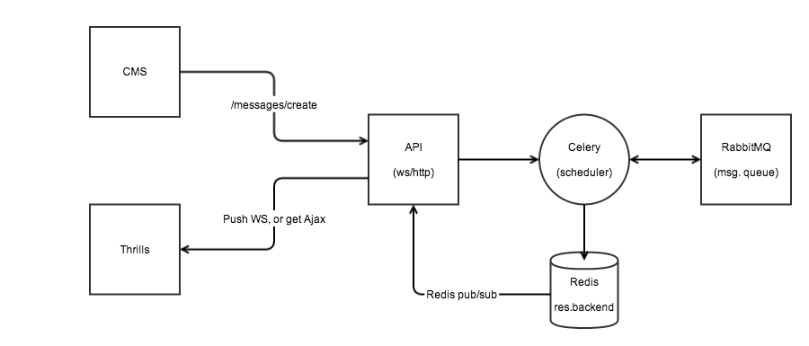

Created by Kalman Speier
What we planned?
(static, node.js)
Our expectations was high, so where we ended up?
“Well we were able to achieve our goals in a very short time period with a small DevOps team and there were just a few hitches.”
This how a manager would say so.
I would rather say that we were able to build what we planned (more or less), thanks for god and Ansible! ;)
Outline
Built on top of battle tested components
RabbitMQ: highly reliable messaging system
Celery: distributed task queue
Redis: in-memory, key-value data store
Overview

Explanation
What we are considering for the future?
(Hubot to rule them all)